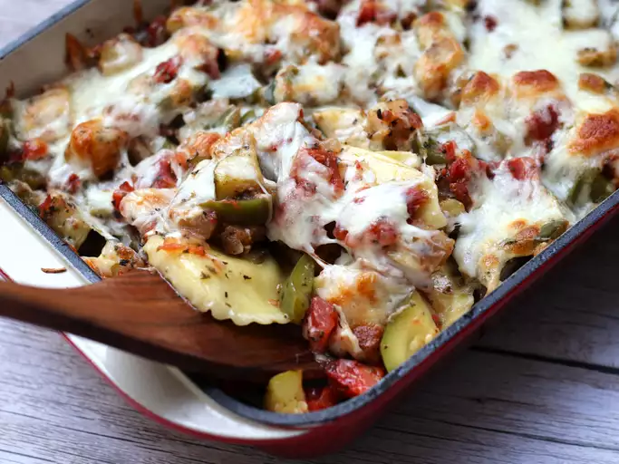

Ratatouille Bake

Description:
This ratatouille bake recipe was given to me by my aunt, who lives in Atlanta, Georgia. It tastes wonderful with your garden vegetables.
Ingredients:
- 1 tablespoon olive oil
- 2 cups peeled and diced eggplant
- 1 onion, chopped
- 5 cloves garlic, minced
- 2 cups chopped zucchini
- 1 (14.5 ounce) can diced tomatoes
- 1 green bell pepper, chopped
- 1 tablespoon dried basil
- 1 tablespoon dired parsley
- 1/2 teaspoon salt
- 1/8 teaspoon ground black peppar
- 1 (8 ounce) package frozen cheese ravioli
- 3/4 cup shredded mozzarella cheese
Steps:
- Preheat the oven to 350 degrees F (175 degrees C). Coat a 2 1/2-quart baking dish with cooking spray.
- Heat olive oil in a large skillet over medium heat. Add eggplant, onion, and garlic; cook and stir until vegetables begin to soften, about 8 minutes. Stir in zucchini, tomatoes, bell pepper, basil, parsley, salt, and black pepper; bring to a boil, stirring frequently. Reduce heat to medium-low; simmer until vegetables are tender, about 20 minutes.
- Fill a large pot with lightly salted water and bring to a rolling boil; stir in ravioli and cook as directed on package. Drain. Transfer ravioli to bottom of the prepared baking dish; spoon hot vegetable mixture over top. Sprinkle with mozzarella cheese.
- Bake in the preheated oven until bubbling and cheese is melted, about 20 minutes.